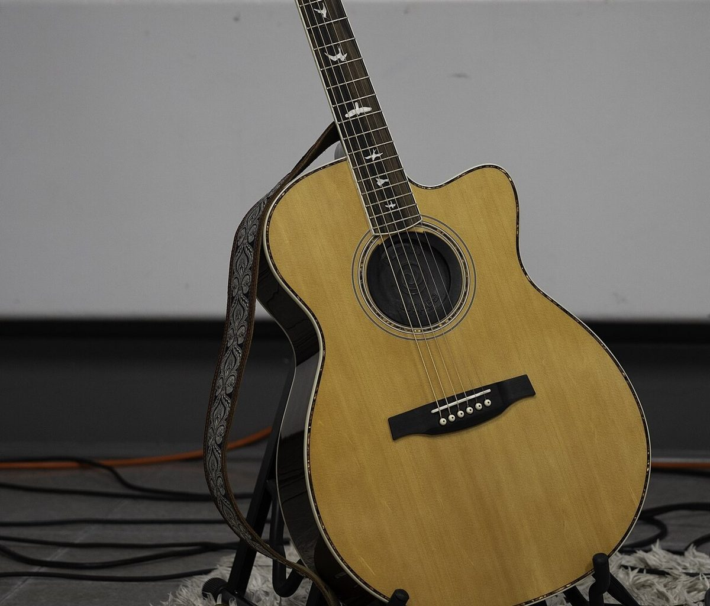
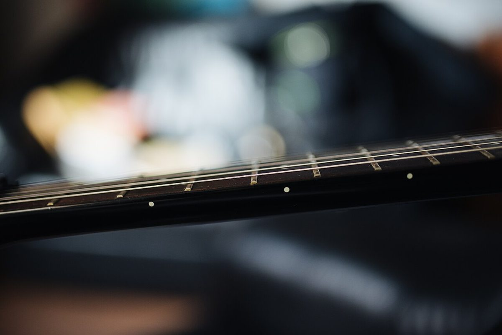

店のこと
店のこと
お店について確認できているのは、所在地・電話番号・Instagramのアカウントです。
このページの「想像してみる」部分は、制作側が想像して書いたものです。お店の実際の様子・考え・商品とは関係がありません。
確認できていること
- 店名は「慣れないラブソング」、業種はパン屋
- 所在地は岐阜県高山市丹生川町町方38-1(〒506-2123)
- 電話番号は0577-70-8884
- Instagramのアカウントは@narenailovesong
- 営業時間・定休日・メニュー・価格・ご予約・駐車場は準備中

想像してみる
この名前の響きから
由来は分かりません。制作側は「慣れない」と「ラブソング」という組み合わせに、少し照れくさいような、やわらかい響きを感じました。パン屋さんの名前として、思わず覚えてしまう言葉だと思います(実際のお店の姿ではなく、制作側の感想です)。
